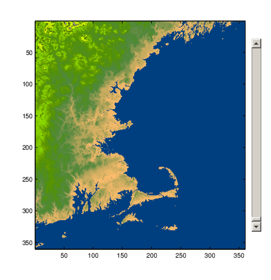

Class Methods for Graphics Callbacks
Referencing the Method
To use an ordinary class method as callback for a graphics object, specify the callback property as a function handle referencing the method. For example,
uicontrol('Style','slider','Callback',@obj.sliderCallback)Where your class defines a method called sliderCallback and obj is an instance of your class.
To use a static method as a callback, specify the callback property as a function handle that includes the class name that is required to refer to a static method:
uicontrol('Style','slider','Callback',@MyClass.sliderCallback)Syntax for Method Callbacks
For ordinary methods, use dot notation to pass an instance of the class defining the callback as the first argument:
@obj.methodName
Define the callback method with the following input arguments:
An instance of the defining class as the first argument
The event source handle
The event data
The function signature would be of this form:
function methodName(obj,src,eventData) ... end
For static methods, the required class name ensures MATLAB® dispatches to the method of the specified class:
@MyClass.methodName
Define the static callback method with two input arguments — the event source handle and the event data
The function signature would be of this form:
function methodName(src,eventData)
Passing Extra Arguments
If you want to pass arguments to your callback in addition to the source and event data arguments passed by MATLAB, you can use an anonymous function. The basic syntax for an anonymous function that you assign to the graphic object's Callback property includes the object as the first argument:
@(src,event)callbackMethod(object,src,eventData,arg1,...argn)
The function signature would be of this form:
function methodName(obj,src,eventData,varargin) ... end
Use a Class Method for a Slider Callback
This example shows how to use a method of your class as a callback for an uicontrol slider.
The SeaLevelSlider class creates a slider that varies the color limits of an indexed image to give the illusion of varying the sea level.
Class Definition
Define SeaLevelSlider as a handle class with the following members:
The class properties store figure and axes handles and the calculated color limits.
The class constructor creates the graphics objects and assigns the slider callback.
The callback function for the slider accepts the three required arguments — a class instance, the handle of the event source, and the event data. The event data argument is empty and not used.
The uicontrol callback uses dot notation to reference the callback method:
...'Callback',@obj.sliderCallback.
classdef SeaLevelSlider < handle properties Figure Axes CLimit end methods function obj = SeaLevelSlider(x,map) obj.Figure = figure('Colormap',map,... 'Position',[100,100,560,580],... 'Resize','off'); obj.Axes = axes('DataAspectRatio',[1,1,1],... 'XLimMode','manual','YLimMode','manual',... 'Parent',obj.Figure); image(x,'CDataMapping','scaled',... 'Parent',obj.Axes); obj.CLimit = get(obj.Axes,'CLim'); uicontrol('Style','slider',... 'Parent',obj.Figure,... 'Max',obj.CLimit(2)-10,... 'Min',obj.CLimit(1)-1,... 'Value',obj.CLimit(1),... 'Units','normalized',... 'Position',[0.9286,0.1724,0.0357,0.6897],... 'SliderStep',[0.003,0.005],... 'Callback',@obj.sliderCallback); end function sliderCallback(obj,src,~) minVal = get(src,'Value'); maxVal = obj.CLimit(2); obj.Axes.CLim = [minVal maxVal]; end end end
Using the SeaLevelAdjuster Class
The class uses the cape image that is included with the MATLAB product. To obtain the image data, use the load command:
load cape X map
After loading the data, create a SeaLevelSlider object for the image:
slaObj = SeaLevelSlider(X,map);
Move the slider to change the color mapping and visualize a rise in sea level.
